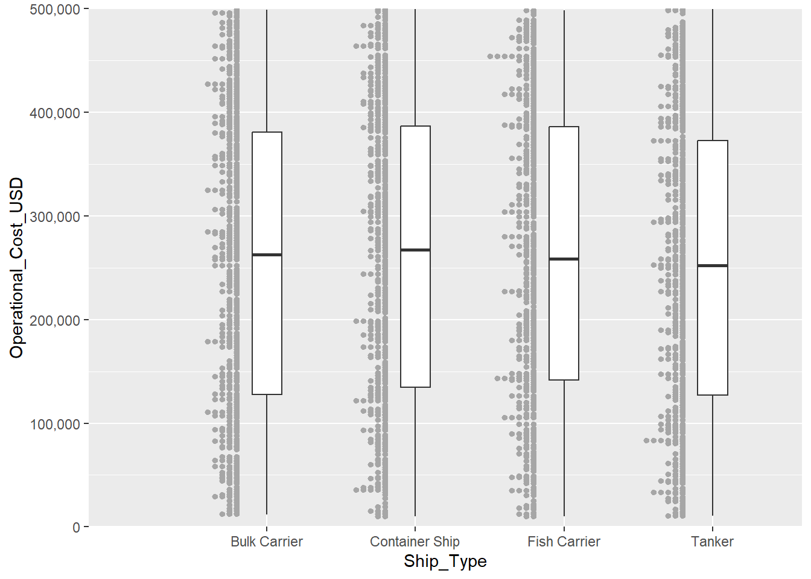

pacman::p_load(tidyverse, ggrepel, patchwork, ggthemes, hrbrthemes, ggiraph,
plotly, DT, readxl, gifski, gapminder, gganimate, ggdist, ggridges,
colorspace, ggstatsplot, crosstalk, FunnelPlotR, knitr, scales)Take-home Exercise 1
Ship Performance Analysis
1 Overview
1.1 The Background
1.2 The Data
The following are the details of the data source for this analysis:
- Data Source: Ship Performance Clustering Dataset
- Dataset Size: 18 columns x 2,736 rows
- Data format: csv file
1.3 The Task
As the graphical editor of the media company, an article about ship performance in the Gulf of Guinea will be written and published. Hence, this paper will include the following contents:
- Exploratory Data Analysis of ship performance based on different underlying factors
- Visualization of key operational metrics of the ship for future performance optimizations in the maritime industry
2 Getting Started
2.1 Load and Install Packages
For this analysis, tidyverse and ggplot2 packages will be used.
2.2 Import Data
Import ship performance dataset to get started with the analysis.
ship <- read_csv("data/Ship.csv")Rows: 2736 Columns: 18
── Column specification ────────────────────────────────────────────────────────
Delimiter: ","
chr (5): Ship_Type, Route_Type, Engine_Type, Maintenance_Status, Weather_C...
dbl (12): Speed_Over_Ground_knots, Engine_Power_kW, Distance_Traveled_nm, D...
date (1): Date
ℹ Use `spec()` to retrieve the full column specification for this data.
ℹ Specify the column types or set `show_col_types = FALSE` to quiet this message.3 Data Preparation
3.1 Select Variables
Before we begin with the analysis, let us do some variable analysis and check the columns that we will be using for this analysis. Each row of the dataset represents the performance metrics and attributes for a specific voyage/ship over a given timeframe.
colnames(ship) [1] "Date" "Ship_Type"
[3] "Route_Type" "Engine_Type"
[5] "Maintenance_Status" "Speed_Over_Ground_knots"
[7] "Engine_Power_kW" "Distance_Traveled_nm"
[9] "Draft_meters" "Weather_Condition"
[11] "Cargo_Weight_tons" "Operational_Cost_USD"
[13] "Revenue_per_Voyage_USD" "Turnaround_Time_hours"
[15] "Efficiency_nm_per_kWh" "Seasonal_Impact_Score"
[17] "Weekly_Voyage_Count" "Average_Load_Percentage"For easier read, let us list down all the columns in the table below to analyse the data types and the description.
Ship Dataframe
| Column Name | Type | Description |
|---|---|---|
| Date | date | timestamp of data entry |
| Ship_Type | categorical | types of vessel |
| Route_Type | categorical | types of route |
| Engine_Type | categorical | types of ship engine |
| Maintenance_Status | categorical | current maintenance status |
| Speed_Over_Ground_knots | numerical | average speed (knots) |
| Engine_Power_kW | numerical | engine power output (kW) |
| Distance_Traveled_nm | numerical | total distance travelled (nm) |
| Draft_meters | numerical | draft of the vessel (m) |
| Weather_Condition | categorical | weather condition during operations |
| Cargo_Weight_tons | numerical | weight of goods on the ship (tons) |
| Operational_Cost_USD | numerical | total operational cost per voyage (USD) |
| Revenue_per_Voyage_USD | numerical | total revenue generated per voyage (USD) |
| Turnaround_Time_hours | numerical | time taken per voyage (hours) |
| Efficiency_nm_per_kWh | numerical | energy efficiency (nm/kWh) |
| Seasonal_Impact_Score | numerical | not listed in Kaggle |
| Weekly_Voyage_Count | integer | total no. of voyage per week |
| Average_Load_Percentage | percentage (%) | not listed in Kaggle |
3.2 Remove Columns
From the table, we will keep all the categorical and numerical columns to gain further insights on this dataset. There are 3 columns that we should remove from this dataset, which are Date, Seasonal_Impact_Score and Average_Load_Percentage.
- Date: This column is removed because it only consists of the timestamp of the data entry, which is not necessarily value-add to this analysis.
- Seasonal_Impact_Score: This column is removed because there is no description of how the value in this column is calculated. As there is no details on the column calculation, there will be no insights gained from analysing this column.
- Average_Load_Percentage: This column is removed because there is no description and source of the column calculation, hence, there is no need to use this column for the analysis.
The 3 columns will be removed using the code chunk below:
ship <- ship %>% select(-c("Date", "Seasonal_Impact_Score", "Average_Load_Percentage"))ship# A tibble: 2,736 × 15
Ship_Type Route_Type Engine_Type Maintenance_Status Speed_Over_Ground_kn…¹
<chr> <chr> <chr> <chr> <dbl>
1 Container S… None Heavy Fuel… Critical 12.6
2 Fish Carrier Short-haul Steam Turb… Good 10.4
3 Container S… Long-haul Diesel Fair 20.7
4 Bulk Carrier Transocea… Steam Turb… Fair 21.1
5 Fish Carrier Transocea… Diesel Fair 13.7
6 Fish Carrier Long-haul Heavy Fuel… Fair 18.6
7 Fish Carrier Transocea… Heavy Fuel… Critical 20.4
8 Container S… Short-haul Diesel Critical 23.5
9 None Coastal Heavy Fuel… Good 17.3
10 Container S… Long-haul Diesel Fair 23.2
# ℹ 2,726 more rows
# ℹ abbreviated name: ¹Speed_Over_Ground_knots
# ℹ 10 more variables: Engine_Power_kW <dbl>, Distance_Traveled_nm <dbl>,
# Draft_meters <dbl>, Weather_Condition <chr>, Cargo_Weight_tons <dbl>,
# Operational_Cost_USD <dbl>, Revenue_per_Voyage_USD <dbl>,
# Turnaround_Time_hours <dbl>, Efficiency_nm_per_kWh <dbl>,
# Weekly_Voyage_Count <dbl>3.3 Handling Missing Value
3.3.1 Categorical Column
table(ship$Ship_Type)
Bulk Carrier Container Ship Fish Carrier None Tanker
669 635 653 136 643 table(ship$Route_Type)
Coastal Long-haul None Short-haul Transoceanic
650 686 136 626 638 table(ship$Engine_Type)
Diesel Heavy Fuel Oil (HFO) None
892 853 136
Steam Turbine
855 table(ship$Maintenance_Status)
Critical Fair Good None
860 867 873 136 table(ship$Weather_Condition)
Calm Moderate None Rough
893 891 136 816 ship <- ship[ship$Ship_Type != "None", ]
ship <- ship[ship$Route_Type != "None", ]
ship <- ship[ship$Engine_Type != "None", ]
ship <- ship[ship$Maintenance_Status != "None", ]
ship <- ship[ship$Weather_Condition != "None", ]dim(ship)[1] 2127 153.3.2 Numerical Column
In this section, we will further clean numerical data type column to ensure the entire dataset is clean. The code chunks below will check the sum of null values of each numerical column.
sum(is.na(ship$Speed_Over_Ground_knots))[1] 0sum(is.na(ship$Engine_Power_kW))[1] 0sum(is.na(ship$Distance_Traveled_nm))[1] 0sum(is.na(ship$Draft_meters))[1] 0sum(is.na(ship$Cargo_Weight_tons))[1] 0sum(is.na(ship$Operational_Cost_USD))[1] 0sum(is.na(ship$Revenue_per_Voyage_USD))[1] 0sum(is.na(ship$Turnaround_Time_hours))[1] 0sum(is.na(ship$Efficiency_nm_per_kWh))[1] 0sum(is.na(ship$Weekly_Voyage_Count))[1] 0glimpse(ship)Rows: 2,127
Columns: 15
$ Ship_Type <chr> "Fish Carrier", "Container Ship", "Bulk Carrie…
$ Route_Type <chr> "Short-haul", "Long-haul", "Transoceanic", "Tr…
$ Engine_Type <chr> "Steam Turbine", "Diesel", "Steam Turbine", "D…
$ Maintenance_Status <chr> "Good", "Fair", "Fair", "Fair", "Fair", "Criti…
$ Speed_Over_Ground_knots <dbl> 10.38758, 20.74975, 21.05510, 13.74278, 18.616…
$ Engine_Power_kW <dbl> 1796.0574, 1648.5567, 915.2618, 1089.7218, 217…
$ Distance_Traveled_nm <dbl> 1060.4864, 658.8741, 1126.8225, 1445.2812, 723…
$ Draft_meters <dbl> 14.653083, 7.199261, 11.789063, 9.727833, 14.9…
$ Weather_Condition <chr> "Rough", "Moderate", "Moderate", "Moderate", "…
$ Cargo_Weight_tons <dbl> 162.3947, 178.0409, 1737.3853, 260.5951, 1912.…
$ Operational_Cost_USD <dbl> 483388.00, 448543.40, 261349.61, 287718.38, 18…
$ Revenue_per_Voyage_USD <dbl> 883765.79, 394018.75, 87551.38, 676121.46, 776…
$ Turnaround_Time_hours <dbl> 63.24820, 49.41815, 22.40911, 64.15823, 47.476…
$ Efficiency_nm_per_kWh <dbl> 0.2903614, 0.4995945, 0.7029057, 1.3313431, 1.…
$ Weekly_Voyage_Count <dbl> 6, 9, 1, 8, 7, 3, 6, 2, 9, 4, 3, 7, 7, 2, 4, 3…average operational cost per ship type, average revenue per ship type, stats of voyage per week
4 Exploratory Data Analysis
4.1 Analysing Cost of Ship Operations
In the code chunk below, we will show the average operational cost according to the ship type. We will set the maximum limit of the y-axis to 300,000.
avg_cost <- ship %>%
group_by(Ship_Type) %>%
summarise(Average_Cost = mean(Operational_Cost_USD, na.rm = TRUE))
ggplot(data = avg_cost, aes(x = Ship_Type, y = Average_Cost, fill = Ship_Type)) +
geom_bar(stat = "identity", fill = "steelblue") +
scale_y_continuous(labels = comma, limits = c(0, 300000), expand = c(0, 0)) +
labs(title = "Average Operational Cost by Ship Type", x = "Ship Type", y = "Average Cost") +
theme_light() +
theme(aspect.ratio = 1)From the bar chart, you can roughly see that on average, container ship has the highest cost for operations. But there is not much difference highlighted between each ship type.
range(ship$Operational_Cost_USD)[1] 10097.44 499734.87ggplot(ship,
aes(x = Ship_Type,
y = Operational_Cost_USD)) +
geom_boxplot(width = .2,
outlier.colour = "red") +
stat_dots(side = "left",
justification = 1.2,
binwidth = 1000,
dotsize = 7) +
scale_y_continuous(labels = comma, limits = c(0, 500000), expand = c(0, 0))